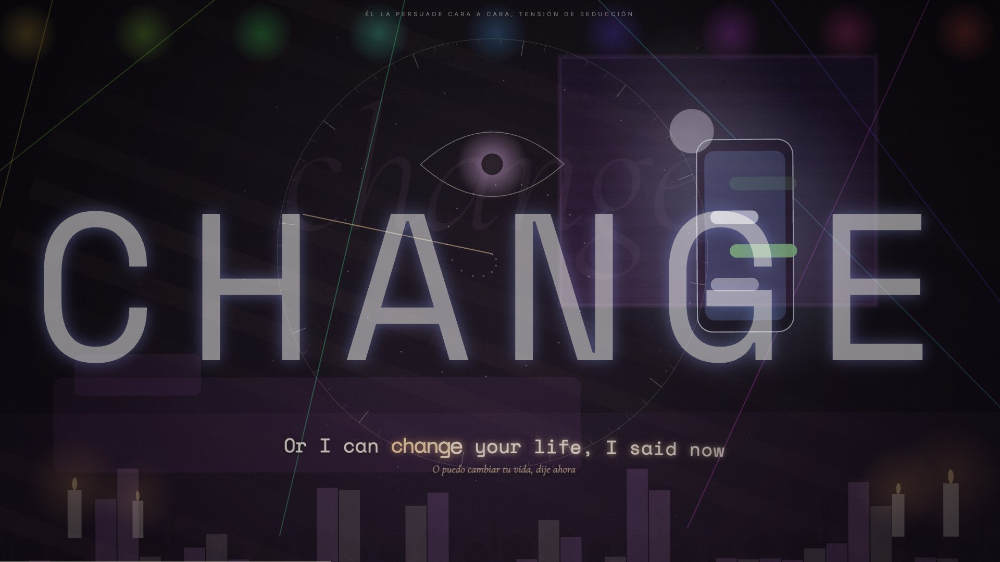
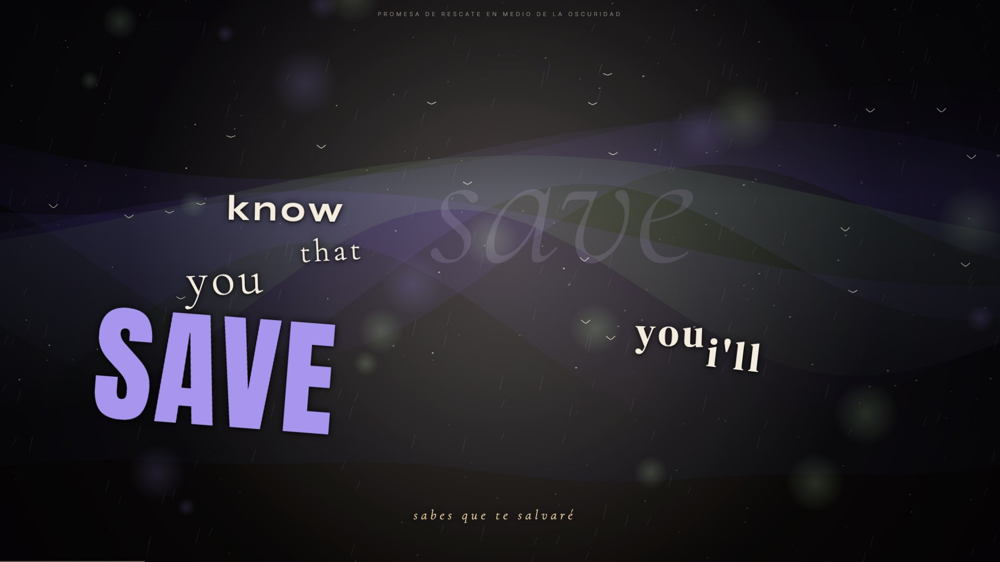
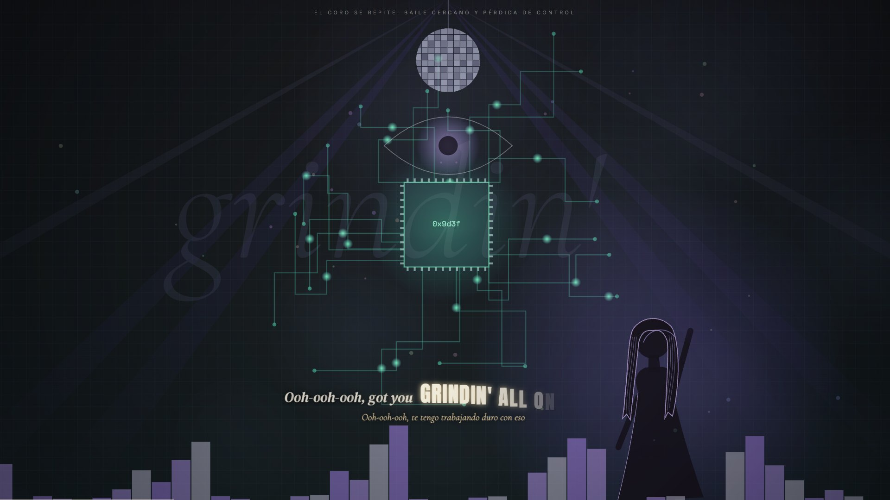
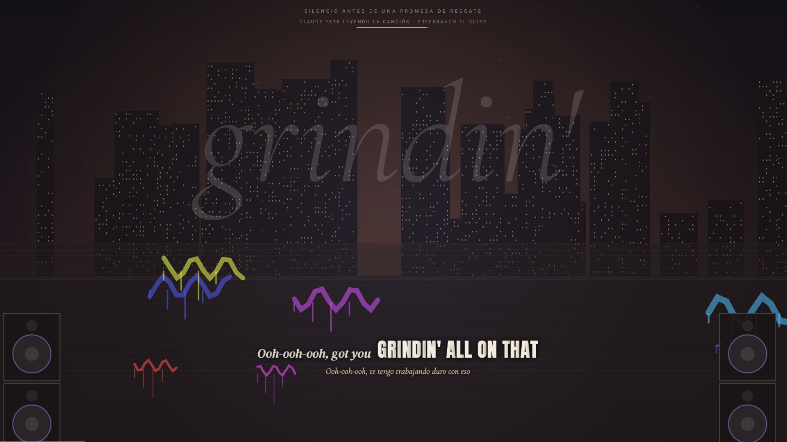
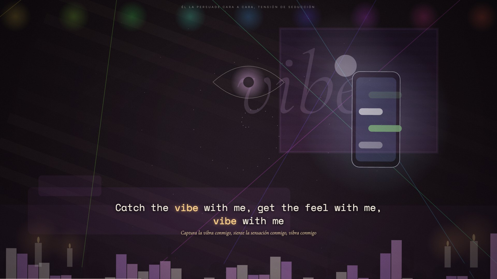

tu música, hecha luz
le das play en apple music o spotify y lumora arma el video solo. antes de empezar, claude lee la canción completa y decide qué se ve en cada verso: nada de decoración al azar.

lee la canción antes de filmarla
la diferencia con un visualizador: lumora entiende la historia. el guion sale de la letra entera, con contexto, no de palabras sueltas.
suena algo
detecta la canción en apple music o spotify, trae la letra sincronizada y el bpm, y empieza a traducirla.
claude escribe el guion
escenario, objetos, ánimo, energía, color y transición por estrofa; qué aparece y qué palabra va en grande por verso. en tramos paralelos: el primero en segundos.
el video sigue la letra
cada verso trae lo que nombra. el coro que vuelve repite sus imágenes. las luces del cuarto siguen la energía.
capturas reales
todas salen de la app corriendo con canciones reales, sin retoques.





qué hace
20 escenarios procedurales
calle, playa, club, cielo, habitación, estadio, sistema, nebulosa, túnel, auroras y más, con más de 80 objetos animados.
tipografía de lyric video
10 composiciones, letra que entra letra por letra y palabra gigante en ganchos, coros y drops.
profundidad real
capas con parallax, cámara que respira con el beat y más de 35 transiciones según el carácter del cambio.
subtítulos traducidos
inglés ↔ español y portugués → español con el traductor de apple, en tu mac.
el mundo real
banderas, marcas con su logo oficial y fotos de las personas famosas que nombra la letra.
por artista y género
48 perfiles de artista y estilos para r&b, pop, rap, reguetón y electrónica, incluso sin letra.
luces govee
color por compás, pulso en cada golpe, destello en los drops y brillo que sigue la intensidad.
clips en mp4
graba la duración que quieras; modo obs con 30 fps estables para streams.
sin cuentas de música
se sincroniza con apple music y spotify de escritorio, sin apis de pago ni premium.
todo se ajusta

calidad automática según tu mac, intensidad de capas, cámara, transiciones, destellos, tamaño y composición de la letra, traducción, guion con claude, instrumentos, fotos, banderas y marcas. se abre con la tecla coma.
- macos 26 o más nuevo · apple music o spotify de escritorio
- claude · tu suscripción vía claude code, o una clave de api
- xcode command line tools · para compilar el traductor y la escucha de audio
git clone https://github.com/kisnner26/lumora.git cd lumora && ./build.sh python3 bridge.py
licencia
el código es visible. el uso personal es libre; el uso comercial necesita licencia.
gratis
- uso personal y sin fines comerciales
- estudiarlo y modificarlo
- polyform noncommercial 1.0.0
licencia comercial
- streams y videos monetizados
- eventos, bares, pantallas
- integrarlo en otro producto